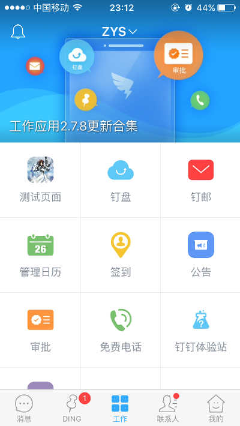
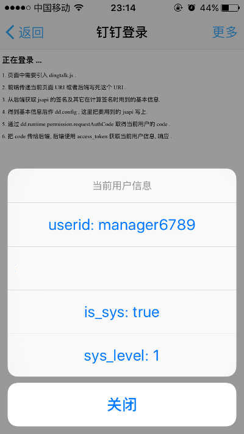

钉钉手机端应用获取当前用户信息流程
先吐个槽，钉钉的“开发者中心”是直接对接的阿里云的后台，跳来跳去很容易懵圈，再加上钉钉的文档，它内容倒是有，但是组织方式不是按流程来的，而是按模块来的，这样的结果就是你要通过文档去了解某个完整的流程怎么处理，也要跳来跳去，转一圈下来看得都有点恶心了。
这里说的“获取当前用户信息”，最有价值的一点，是获取手机端当前用户的在某企业的一个工号（至于到底是不是工号，或者其它的标识，那是管理员在后台自己维护的）。有了这个用户标识，就可以实现“直接登录”等功能了。


1. 基本概念
钉钉有一个专门的“企业管理”后台，创建一个“企业”之后，作为管理员可以登录这个后台 https://oa.dingtalk.com/ （这个登录表单竟然没有处理 Enter 键）。
钉钉的手机客户端里面，中间的“工作”一页，里面可以在你当前加入的多个企业之间切换（顶部中间）。每个企业都有一个“首页”，这个首页的地址本身是可配置的，如果不配置，则默认是一个 9 宫格的样式，每个格子是一个应用。
每个应用在钉钉中就是一个链接地址，但是这个地址不一定是 http 协议开头的，也可以是其它协议头，以实现直接唤起相应的应用的功能。
在管理后台可以配置“首页”中的应用，如果是 http 协议开头，则会使用使用钉钉内部的浏览器容器打开指定页面。
钉钉内部的浏览器容器，有提供自己有一套 jsapi ，除了“获取当前用户”这类功能，还有 UI 上的一些工具提供，http://h5.m.laiwang.com/home/ding.html （钉钉打开这个地址，把这个地址转成二维码，扫一下就可以了） 。
现在你可以创建一个企业，进入后台，然后新建一个“微应用”，再填上这个应用的“首页地址”就可以了。这时你打开钉钉，就能在这个企业的页面看到你创建的应用的图标了，点击的话，就会访问指定的页面地址，简单直接有效。
在后台中，随便把以下几处配置项弄明白：
- AgentID ，应用的 ID 标识，在具体的应用设置页面能找到。
- CorpID ，企业 ID ，在“微应用设置”页面能看到，相当于 OAuth2 中的 app_id 。
- CorpSecret ，在“微应用设置”页面能看到，相当于 OAuth2 中的 app_secret ，换 access_token 时会用到。
- SSOsecret ，同样是在“微应用设置”页，注意跟 CorpSecret 分开。目前我没用到这个配置。
上面几个值可以先记一下，后面代码中会用到的。
钉钉的开发文档在 http://ddtalk.github.io/dingTalkDoc/ ，所有内容都在这一个页面中。
2. 前端流程
我们的目的是“获取当前用户信息”，在钉钉的容器环境中，要正常用上它的 jsapi ，前端这里要先作一个 “签权” 及 “配置” 的过程，签权这个大部分是后端的逻辑，后面会介绍。
前端的流程大概如下：
- 页面中需要引入 dingtalk.js .
- 前端传递当前页面 URI 或者后端写死这个 URI （计算签名时要用）.
- 从后端获取 jsapi 的签名及其它在计算签名时用到的基本信息.
- 得到基本信息后调用
dd.config(签名是在这里用), 这里把要用到的 jsapi 写上. - 通过
dd.runtime.permission.requestAuthCode取得当前用户的code. - 把
code传给后端, 后端使用 access_token 获取当前用户信息, 响应 .
这里先不管签名什么的怎么计算，那是后端的事。简单来说前端只需要作两件事：
- 从后端拿到 jsapi 的签名用其它信息，然后使用
dd.config进行配置。 - 使用
dd.runtime.permission.requestAuthCode得到一个code，把code给后端去请求当前用户信息。
完整的前端部分代码：
<!DOCTYPE html> <html> <head> <meta charset="utf-8" /> <title>钉钉登录</title> <script type="text/javascript" src="http://g.alicdn.com/ilw/ding/0.8.6/scripts/dingtalk.js"></script> <script type="text/javascript" src="http://s.zys.me/js/jq/jquery.min.js"></script> </head> <body> <h1>正在登录 ...</h1> <p>1. 页面中需要引入 dingtalk.js .</p> <p>2. 前端传递当前页面 URI 或者后端写死这个 URI .</p> <p>3. 从后端获取 jsapi 的签名及其它在计算签名时用到的基本信息.</p> <p>4. 得到基本信息后作 dd.config , 这里把要用到的 jsapi 写上.</p> <p>5. 通过 dd.runtime.permission.requestAuthCode 取得当前用户的 code .</p> <p>6. 把 code 传给后端, 后端使用 access_token 获取当前用户信息, 响应 .</p> <script type="text/javascript"> $(function(){ var infoDefer = $.Deferred(); // 这个事件处理得有问题, 延迟绑定就无效了 dd.ready(function(){ infoDefer.done(function(info){ dd.device.notification.showPreloader({ text: "正在获取当前用户信息 ...", showIcon: true, onSuccess : function(result) { }, onFail : function(err) {} }); dd.runtime.permission.requestAuthCode({ corpId: info.corp_id, onSuccess: function(result) { var code = result.code; var defer = $.ajax({ url: '/dingding/user-info', data: {code: code}, dataType: 'json' }); // 看一看 loading 效果 setTimeout(function(){ defer.done(function(response){ // 响应内容把所有变量命名的风格都过了一遍 -_- dd.device.notification.hidePreloader({ onSuccess : function(result) { }, onFail : function(err) {} }); dd.device.notification.vibrate({ duration: 300, onSuccess : function(result) { }, onFail : function(err) {} }); dd.device.notification.actionSheet({ title: "当前用户信息", cancelButton: '关闭', otherButtons: [ 'userid: ' + response.obj.userid, 'deviceId: ' + response.obj.deviceId, 'is_sys: ' + response.obj.is_sys, 'sys_level: ' + response.obj.sys_level ], onSuccess : function(result) { // 取消这里取的是 -1 alert(result.buttonIndex); }, onFail : function(err) {} }); }); }, 3000); }, onFail : function(err) { alert('出错了, ' + err); } }); }); }); var defer = $.ajax({ url: '/dingding/jsapi-sign', data: {url: location.href}, dataType: 'json', }); defer.done(function(response){ var info = response.obj; dd.config({ agentId: info.agent_id, // 必填，微应用ID corpId: info.corp_id,//必填，企业ID timeStamp: info.timestamp, // 必填，生成签名的时间戳 nonceStr: info.nonce, // 必填，生成签名的随机串 signature: info.sign, // 必填，签名 jsApiList: [ 'runtime.permission.requestAuthCode', 'device.notification.showPreloader', 'device.notification.hidePreloader', 'device.notification.vibrate', 'device.notification.actionSheet' ] // 必填，需要使用的jsapi列表 }); infoDefer.resolve(info); }); }); </script> </body> </html>
3. 后端流程
开始之前，先把几个后面会用到的配置项写上：
CORP_ID = 'ding5c8c7ccc6462b535' CORP_SECRET = 'eVuSoZwTA0mc3fZL1XnyHhjkeEPs2ZGLioxIUkGWuje1t4P0SFxQXg2a_f3L3D8Y' AGENT_ID = '17531912' TOKEN_URL = 'https://oapi.dingtalk.com/gettoken' TICKET_URL = 'https://oapi.dingtalk.com/get_jsapi_ticket' USER_INFO_URL = 'https://oapi.dingtalk.com/user/getuserinfo'
前三个在前面已经介绍过了，具体值在管理后台能找到的。后三个是会用到的服务地址。
- 使用
CORP_ID和CORP_SECRET到TOKEN_URL可以得到access_token。 - 使用
access_token到TICKET_URL可以得到ticket，这个ticket用于计算前端的 jsapi 需要的一个签名。 - 把 jsapi 签名给前端，前端通过 jsapi 能得到一个
code。 code和access_token到USER_INFO_URL就可以得到当前用户信息了。
整个过程中，官方的文档应该有的地方都讲到了的。
给前端 jsapi 签名值的时候，虽然“保密”的量就这一个，但是其它的用于计算签名的其它量，比如时间戳， AGENT_ID 这些，在前端调用 dd.config 还是需要用到，所以这块后端响应时，就全部返回吧。
计算签名的具体逻辑跟一般算签名的差不多，参数，排序， sha1 ：
def sign(self, ticket, url): 'jsapi 需要的签名' stamp = int(time.time()) nonce = uuid.uuid4().hex p = { 'noncestr': nonce, 'jsapi_ticket': ticket.encode('utf8'), 'timestamp': str(stamp), 'url': url, } keys = p.keys() keys.sort() pair = [ (k, p[k]) for k in keys] pair = '&'.join('{}={}'.format(*p) for p in pair) sign = hashlib.sha1(pair).hexdigest() return sign, stamp, nonce
完整的后端代码：
# -*- coding: utf-8 -*- import hashlib import time import uuid import json import urllib from tornado.httpclient import AsyncHTTPClient from tornado import web from tornado import gen from base import BaseHandler class DingDingBaseHandler(BaseHandler): CORP_ID = 'ding5c8c7ccc6462b535' CORP_SECRET = 'eVuSoZwTA0mc3fZL1XnyHhjkeEPs2ZGLioxIUkGWuje1t4P0SFxQXg2a_f3L3D8Y' AGENT_ID = '17531912' TOKEN_URL = 'https://oapi.dingtalk.com/gettoken' TICKET_URL = 'https://oapi.dingtalk.com/get_jsapi_ticket' USER_INFO_URL = 'https://oapi.dingtalk.com/user/getuserinfo' @gen.engine def get_user_info_by_code(self, code, callback): '通过前端 jsapi 得到的 code 获取当前用户信息' token = yield gen.Task(self.get_token) p = { 'access_token': token, 'code': code, } url = self.USER_INFO_URL + '?' + urllib.urlencode(p) resposne = yield gen.Task(AsyncHTTPClient().fetch, url) callback(json.loads(resposne.body)) def sign(self, ticket, url): 'jsapi 需要的签名' stamp = int(time.time()) nonce = uuid.uuid4().hex p = { 'noncestr': nonce, 'jsapi_ticket': ticket.encode('utf8'), 'timestamp': str(stamp), 'url': url, } keys = p.keys() keys.sort() pair = [ (k, p[k]) for k in keys] pair = '&'.join('{}={}'.format(*p) for p in pair) sign = hashlib.sha1(pair).hexdigest() return sign, stamp, nonce @gen.engine def get_ticket(self, token, callback): '通过 access_token 获取 jsapi_ticket' p = { 'access_token': token } url = self.TICKET_URL + '?' + urllib.urlencode(p) resposne = yield gen.Task(AsyncHTTPClient().fetch, url) ticket = json.loads(resposne.body)['ticket'] callback(ticket) @gen.engine def get_token(self, callback): '能过 corp_id 和 corp_secret 获取 access_token' p = { 'corpid': self.CORP_ID, 'corpsecret': self.CORP_SECRET, } url = self.TOKEN_URL + '?' + urllib.urlencode(p) resposne = yield gen.Task(AsyncHTTPClient().fetch, url) token = json.loads(resposne.body)['access_token'] callback(token) class DingDingHandler(DingDingBaseHandler): def get(self): self.redirect('/dingding/login') class DingDingJsapiSignHandler(DingDingBaseHandler): @web.asynchronous @gen.engine def get(self): '获取指定页面的钉钉 jsapi 的签名' url = self.get_argument('url', '') token = yield gen.Task(self.get_token) ticket = yield gen.Task(self.get_ticket, token) sign, stamp, nonce = self.sign(ticket, url) data = { 'agent_id': self.AGENT_ID, 'corp_id': self.CORP_ID, 'timestamp': stamp, 'nonce': nonce, 'sign': sign, } self.finish({'code': 0, 'obj': data}) class DingDingUserInfoHandler(DingDingBaseHandler): @web.asynchronous @gen.engine def get(self): '通过 code 获取当前用户信息' code = self.get_argument('code', '') obj = yield gen.Task(self.get_user_info_by_code, code) self.finish({'code': 0, 'obj': obj}) class DingDingLoginHandler(DingDingBaseHandler): def get(self): self.render('dingding-login.html')
里面的 dingding-login.html 就是前面给出的前端代码。
4. 总结
按上面代码的逻辑，整个前后端流程如下图所示，黄色是前端逻辑，蓝色和绿色是后端逻辑，绿色的是有请求钉钉服务的地方。